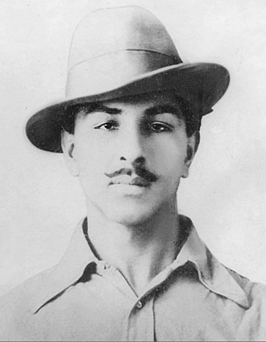

Bhagat Singh
Indian Revolutionary

Bhagat Singh (September 1907 – 23 March 1931) was a charismatic Indian revolutionary who participated in the murder of a junior British
police officer and an Indian head constable in mistaken retaliation for the death of an Indian nationalist.He also took part in a largely
symbolic bombing of the Central Legislative Assembly in Delhi and a hunger strike in jail, which—on the back of sympathetic coverage in Indian-owned
newspapers—turned him into a household name in Punjab region, and after his execution at age 23 into a martyr and folk hero in Northern India.Borrowing
ideas from Bolshevism and anarchism, he electrified a growing militancy in India in the 1930s, and prompted urgent introspection within the Indian National
Congress's nonviolent and eventually successful campaign for India's independence.